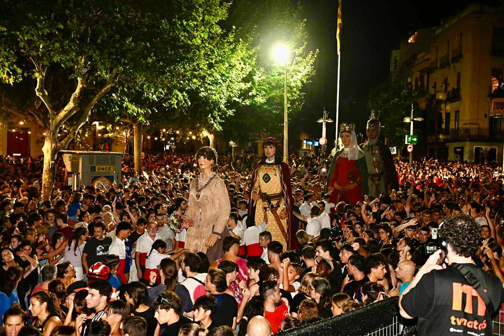
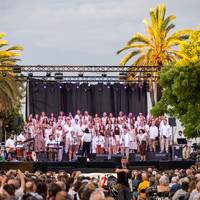
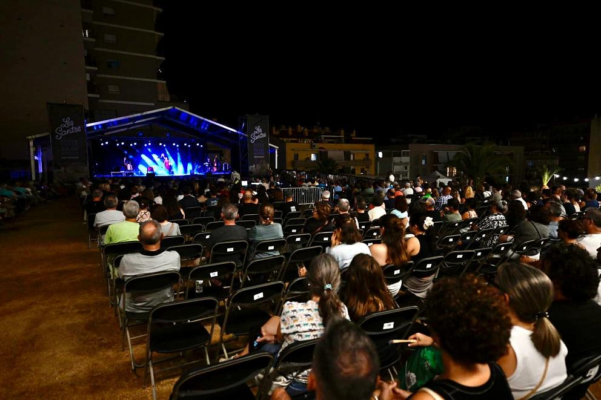
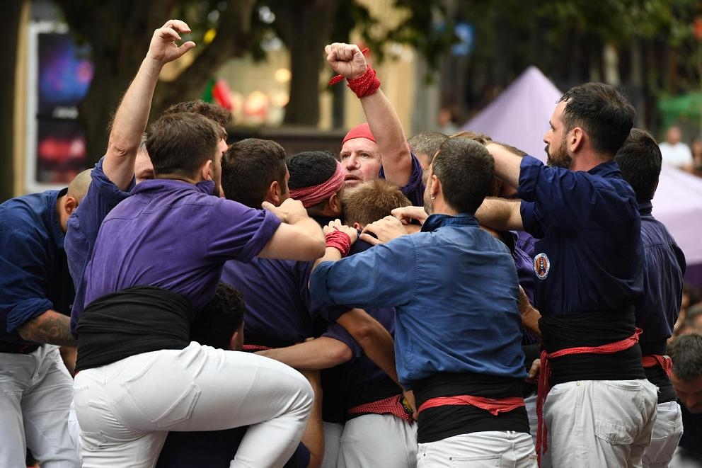
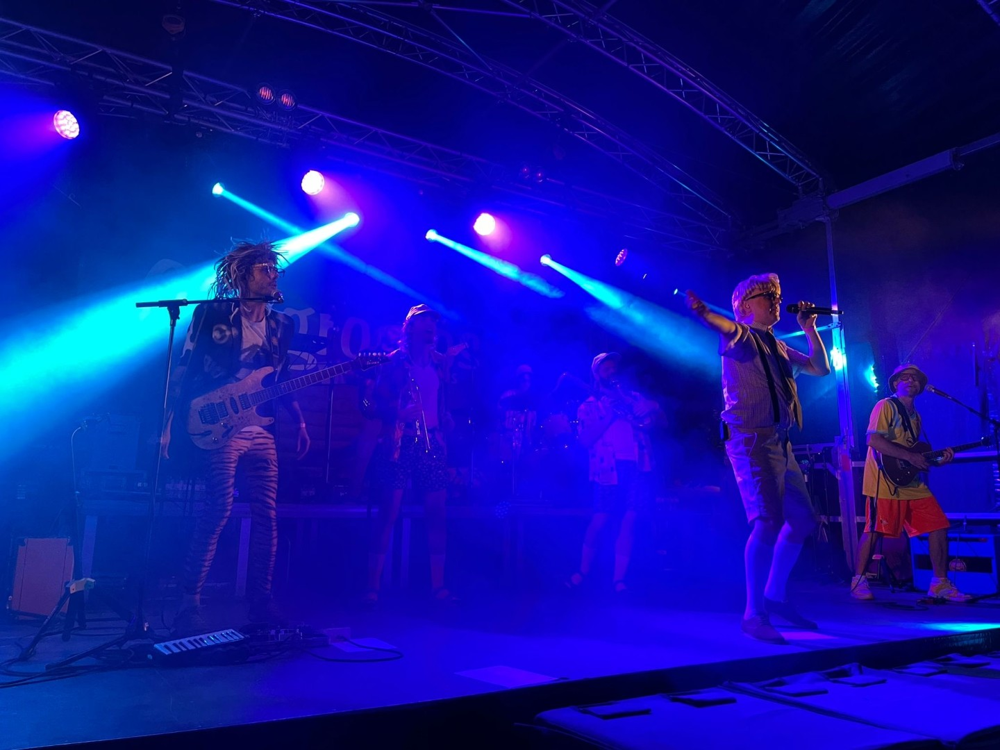
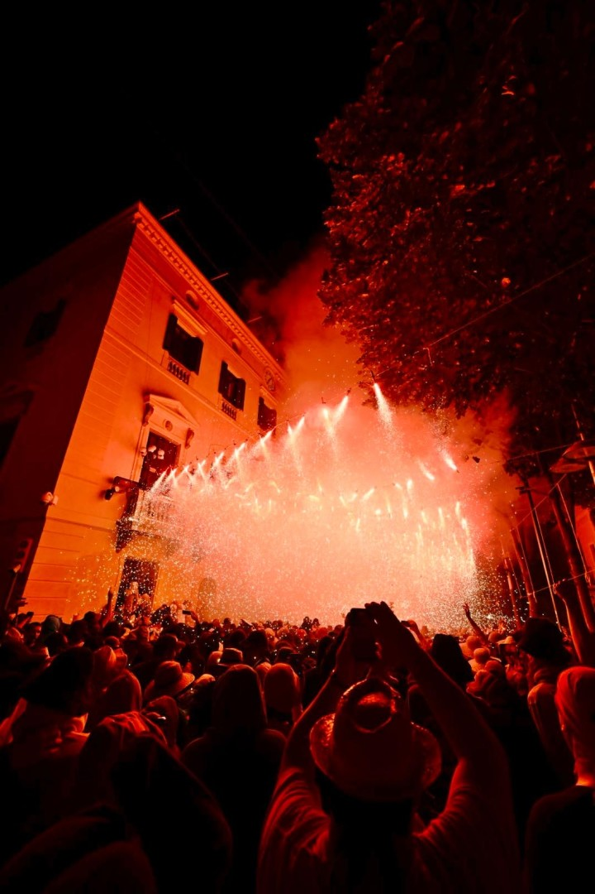
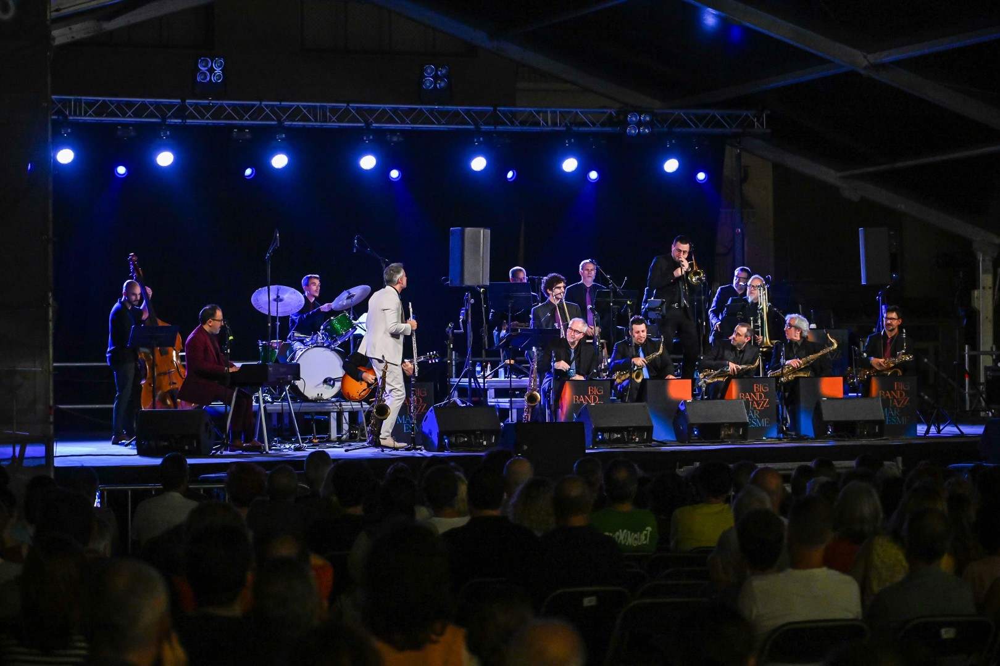

Cultura popularGegantada
◷ 18:00h
📍 Diversos indrets
Descobreix tot el que passarà a Mataró

Cultura popular◷ 18:00h
📍 Diversos indrets

Nit d'estiu◷ 20:00h
📍 Passeig del Callao

Acte destacat◷ 22:00h
📍 Passeig del Callao

◷ 12:00h
📍 Plaça de Santa Anna

Nit d'estiu◷ 22:30h
📍 Escenari de la Platja

Cultura popular◷ 21:00h
📍 Carrers del Centre

Nit d'estiu◷ 23:30h
📍 Parc Central